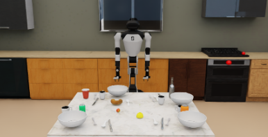

Incoming M.S. student at UNIST
Starting my M.S. in Artificial Intelligence at Ulsan National Institute of Science and Technology (UNIST) in September 2026.
Aspiring AI Researcher
Robotics • Vision-Language-Action Models • Generative Models
I’m interested in how vision, language, and generative modeling can help robots learn useful behavior in the physical world.
Explore my work↓About
I’m an incoming M.S. student in Artificial Intelligence at UNIST.
My main interests are robotics, Vision-Language-Action models, and generative models. In particular, I want to understand how robots can learn generalizable behaviors from multimodal data and remain reliable over long-horizon tasks.
Starting September 2026: M.S. in Artificial Intelligence at Ulsan National Institute of Science and Technology (UNIST).
News
Starting my M.S. in Artificial Intelligence at Ulsan National Institute of Science and Technology (UNIST) in September 2026.
Research
Intelligent systems that perceive, reason, and interact with dynamic physical environments.
Connecting visual understanding and language reasoning to grounded robot control.
Learning expressive distributions over observations, plans, and actions for embodied systems.
Generalizable skills for precise, adaptive, and dexterous object interaction.
Predictive representations that support planning, imagination, and data-efficient robot learning.
Projects

SimulationRobotics · Simulation
Designed and implemented a simulation framework for table-bussing tasks using Isaac Sim and OmniGibson during my internship at ETRI.
Publications
Korean Robotics Society Annual Conference (KRoC) · Poster
Huiwon Jeong, Youngjae Yoo
A method for generating post-meal table scenes that reflect human behavioral tendencies.
Experience
Ulsan National Institute of Science and Technology (UNIST)
Incoming graduate student. Research group and advisor information will be updated after enrollment.
Social Robotics Research Lab · Electronics and Telecommunications Research Institute (ETRI)
Developed simulation environments for table-bussing tasks using Isaac Sim and OmniGibson.
Myongji College · GPA 3.89/4.5
Contact
I’m happy to talk about robotics, VLA models, generative models, and graduate research.
huiwonjeong0116@gmail.com